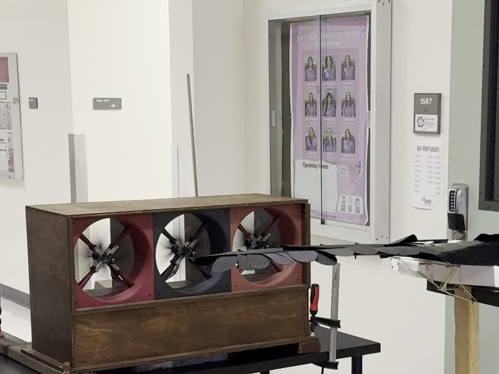

Starting With 3 Modules and a Single Controller
The prototype placed 3 fan modules in a shared flow path, each with 2 contra rotating motors and separate ESCs. The 6 motors ran on 3 independent 400 W supplies at 24 V, totaling about 1.2 kW. A single Arduino R4 hosted the dashboard and generated all PWM outputs. Continuous PWM replaced on or off commands, allowing airflow speed and module balance to be adjusted.